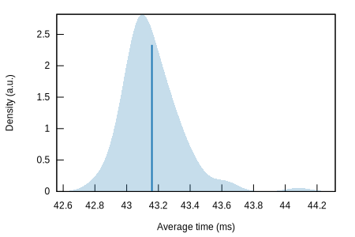
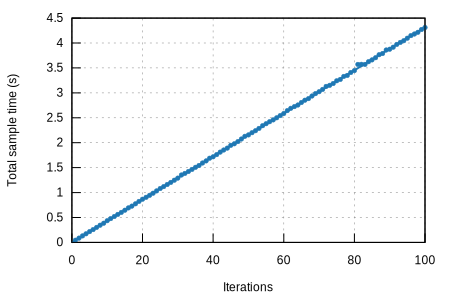

|  |  |
| Lower bound | Estimate | Upper bound | |
|---|---|---|---|
| Slope | 43.130 ms | 43.172 ms | 43.224 ms |
| Throughput | 84.577 MiB/s | 84.679 MiB/s | 84.760 MiB/s |
| R² | 0.9974545 | 0.9975818 | 0.9973808 |
| Mean | 43.125 ms | 43.159 ms | 43.196 ms |
| Std. Dev. | 136.69 us | 183.05 us | 232.26 us |
| Median | 43.094 ms | 43.124 ms | 43.158 ms |
| MAD | 100.97 us | 133.64 us | 170.63 us |
The plot on the left displays the average time per iteration for this benchmark. The shaded region shows the estimated probabilty of an iteration taking a certain amount of time, while the line shows the mean. Click on the plot for a larger view showing the outliers.
The plot on the right shows the linear regression calculated from the measurements. Each point represents a sample, though here it shows the total time for the sample rather than time per iteration. The line is the line of best fit for these measurements.
See the documentation for more details on the additional statistics.
| Lower bound | Estimate | Upper bound | ||
|---|---|---|---|---|
| Change in time | -51.009% | -50.952% | -50.897% | (p = 0.00 < 0.05) |
| Change in throughput | +104.12% | +103.88% | +103.65% |
The plot on the left shows the probability of the function taking a certain amount of time. The red curve represents the saved measurements from the last time this benchmark was run, while the blue curve shows the measurements from this run. The lines represent the mean time per iteration. Click on the plot for a larger view.
The plot on the right shows the two regressions. Again, the red line represents the previous measurement while the blue line shows the current measurement.
See the documentation for more details on the additional statistics.
{kind=link}
{kind=link}
{kind=link}
{kind=link}
{kind=link}
{kind=link}
{kind=link}
{kind=link}
{kind=link}
{kind=link}
{kind=link}
{kind=link}